13. týden: Formování a odlévání
Během třináctého týdne bylo úkolem vyrobit formu pro nějaký malý předmět a následně z ní vytvořit odlitek.
Silikonové „botičky“ pro hexapoda
Během 9. týdne, kdy jsme se věnovali CNC obrábění, jsem z materiálu POM-C vyfrézoval dvoudílnou formičku pro odlévání silikonových návleků na nohy mého hexapoda. Návleky by měly zlepšit přilnavost k povrchu, což hexapodovi umožní stabilnější pohyb bez podkluzování. Jelikož má hexapod šest nohou, bylo jich nutné odlít celkem šest.
Silikon se nalévá do velkého otvoru ve spodní části formy. Prostřední kolík ve vrchní části pak zasahuje do dutiny se silikonem a slouží k vytvoření vnitřního otvoru v návleku (pro nasunutí na nohu robota). Přebytečný silikon může odtékat čtyřmi kanálky.
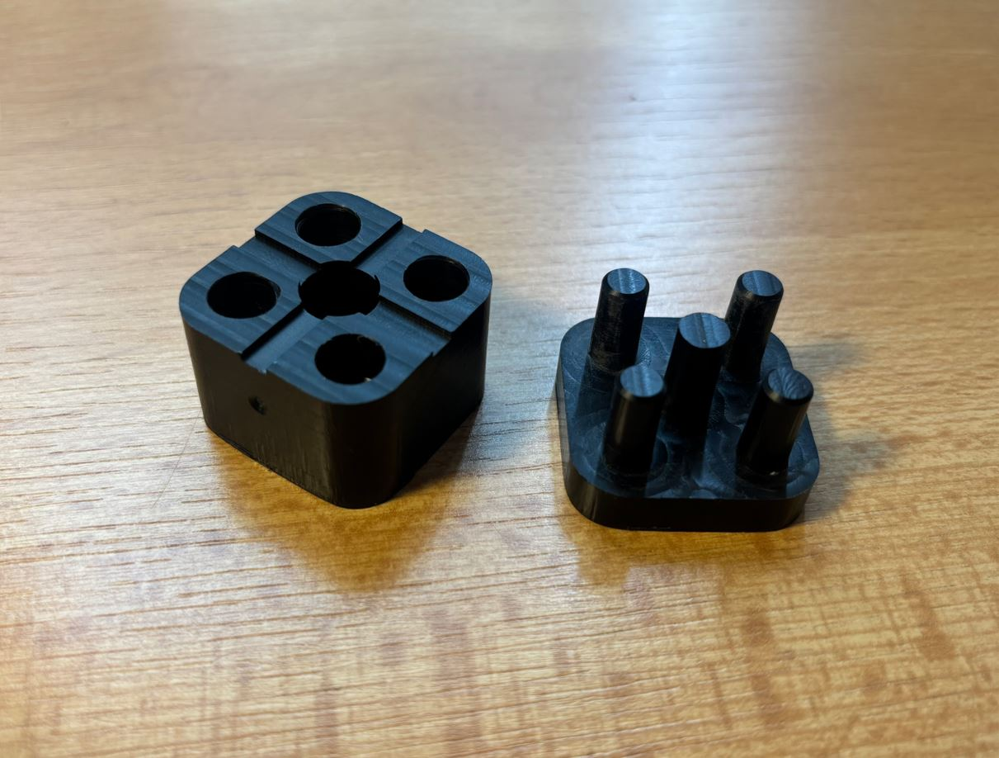
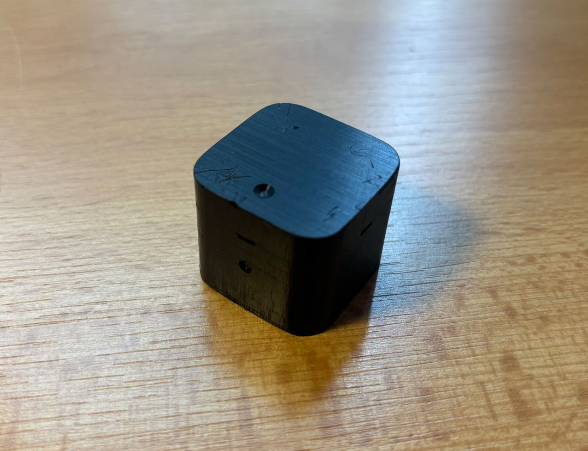
Výsledný odlitek by měl vypadat takto:
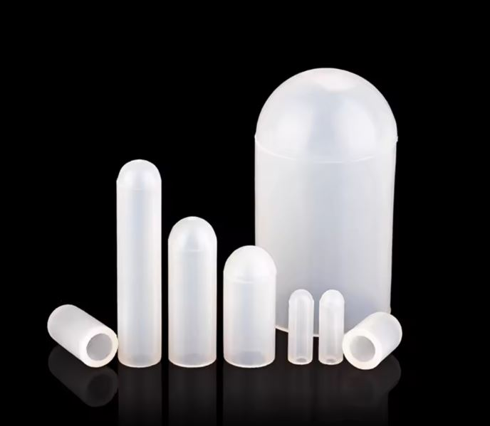
Výběr materiálu
Pro návleky jsem použil dvousložkový silikon Ecoflex 00-35 FAST. Jedná se o tekutou silikonovou pryž, která po smíchání obou složek v poměru 1:1 vytvrzuje při pokojové teplotě už za zhruba 5 minut. Takzvaný „pot life“ (doba, po kterou je silikon tekutý a dá se s ním pracovat) je jen asi 2,5 minuty.
Tento silikon je po vytvrdnutí velmi měkký a pružný. Díky tomu na hladké podlaze prakticky neklouže a zároveň tlumí nárazy a vibrace, které by se při chůzi hexapoda přenášely do servomotorů, což jim může prodloužit životnost. Měkkost materiálu má ale i svou nevýhodu - na drsnějším povrchu se může silikon poměrně rychle ošoupat nebo natrhnout. Spolehlivějším řešením by mohlo být použití tvrdšího silikonu, případně vytisknutí návleků z flexibilního filamentu (TPU).
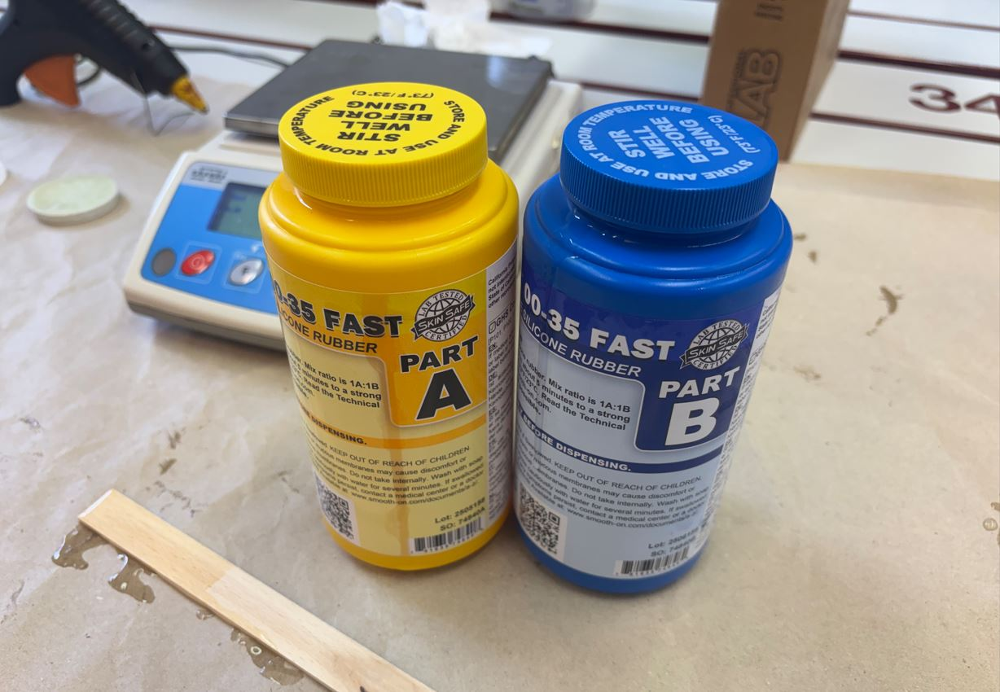
Příprava a postup odlévání
Forma spotřebuje na jeden návlek zhruba 1 ml silikonu. Jelikož by se takto malá množství (0,5 ml od každé složky) velmi těžko odměřovala a následně přelévala do formy, využíval jsem zbytky po spolužácích, kteří si typicky připravili více silikonu, než nakonec potřebovali (těžko se to odhaduje).
Před samotným odměřováním je důležité promíchat jednotlivé složky v jejich lahvích. V silikonu se totiž mohou tvořit hrudky. Promícháním se zajistí hladká a homogenní konzistence, což je důležité pro správné vytvrdnutí.
Míchání obou složek probíhalo v průhledném plastovém kelímku na jedno použití umístěném na váze. Po přidání druhé složky se směs důkladně promíchala dřevěnou špachtlí. Je důležité míchat v celém objemu kelímku a občas setřít silikon ze stěn i ode dna, aby se obě složky dobře spojily. Během práce jsem si všiml, že při příliš agresivním míchání, které narušovalo hladinu směsi, obsahoval výsledný odlitek výrazně více bublinek. Kvůli rychlému vytvrzování bylo navíc nutné pracovat svižně.
Následně se silikon opatrně nalil do formy. Byli jsme instruováni, abychom silikon lili vždy jen na jedno místo a nechali ho, ať se do zbytku formy rozlije sám. Silikon se tímto způsobem rovnoměrně šíří od jednoho bodu a přirozeně vytlačuje vzduch před sebou ven. Tím se minimalizuje vznik bublinek.
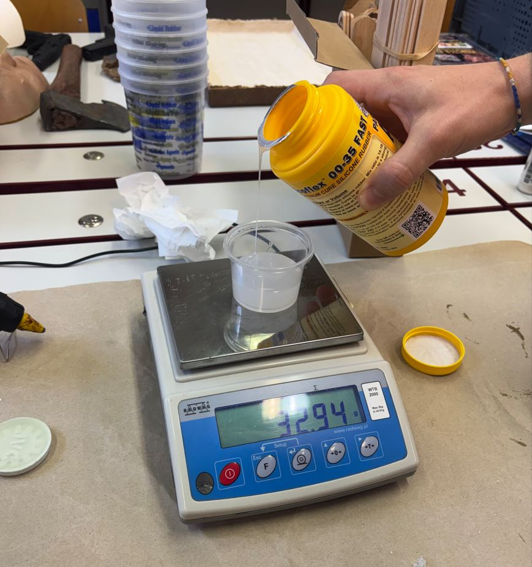
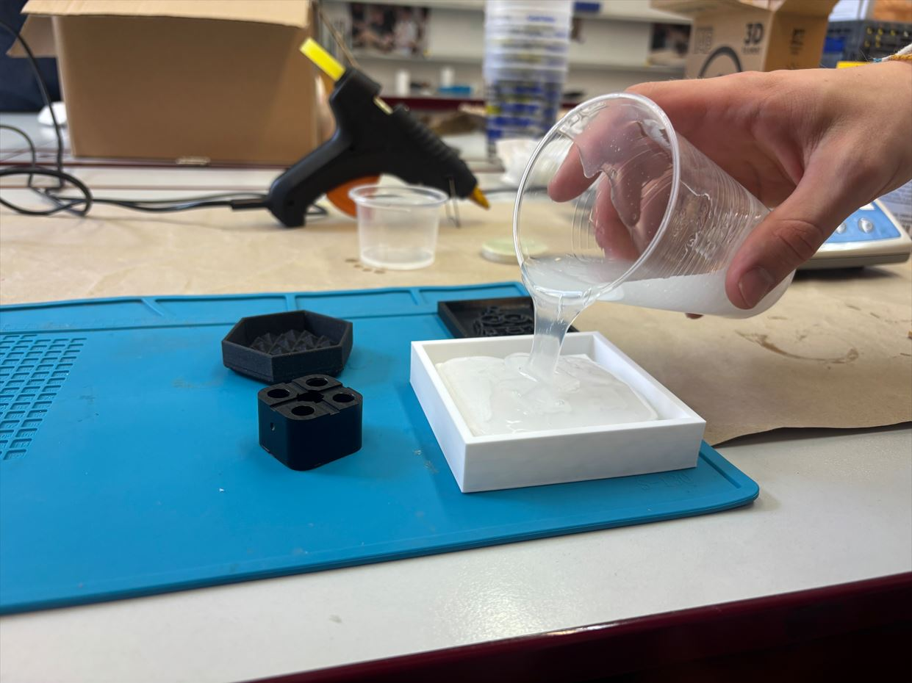
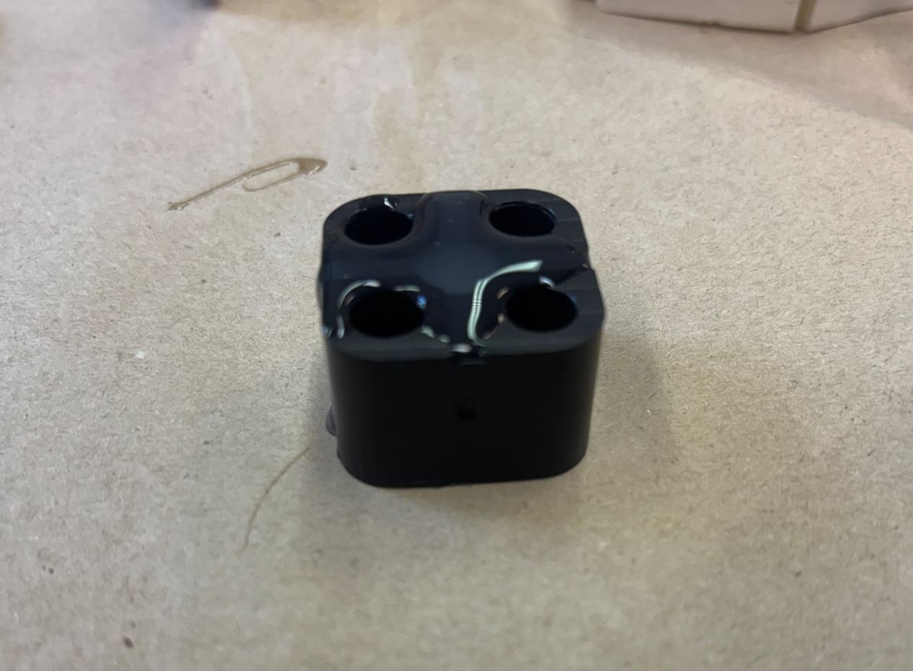
Po zaplnění dutiny ve spodní části formy jsem do ní zasadil vrchní díl a formu jsem svrchu zatížil. Jelikož je objem formy malý, většinou jsem silikonu nalil o něco více. Po přitlačení vrchní části tak přebytečný materiál vytekl odtokovými kanálky, přičemž část zatekla i do otvorů pro vodicí kolíky.
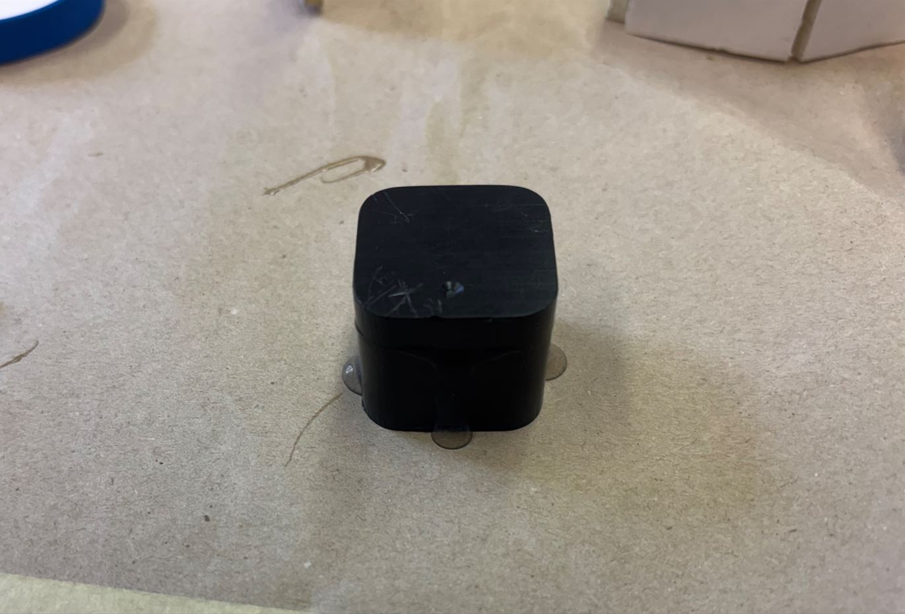
Vyjmutí odlitku a finální úpravy
Když zhruba po pěti minutách silikon ztvrdnul, formička byla slepená a nešla snadno otevřít. Uchytil jsem tedy jednu část do svěráku a druhou jsem opatrně vykroutil ven.
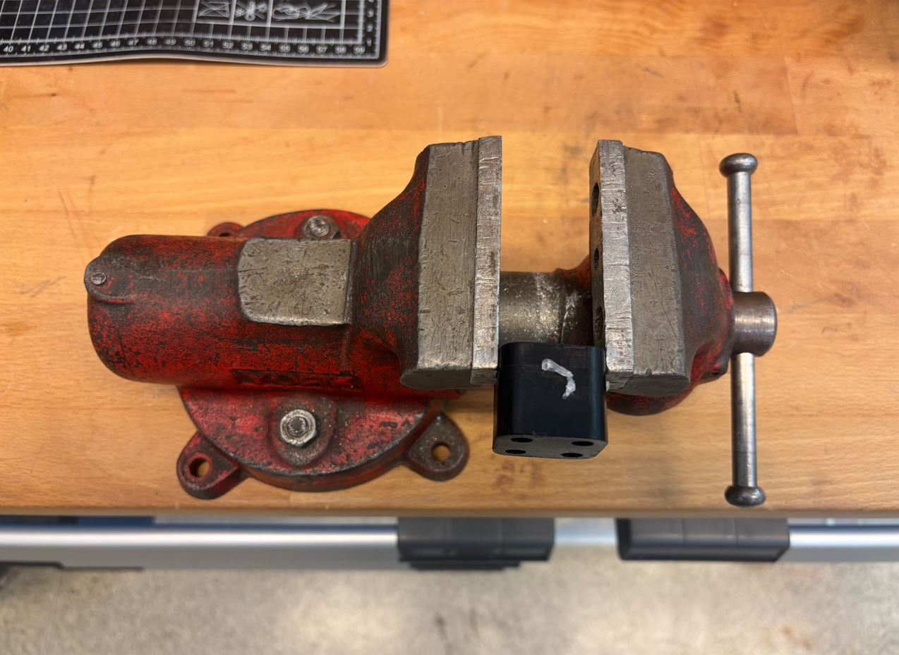
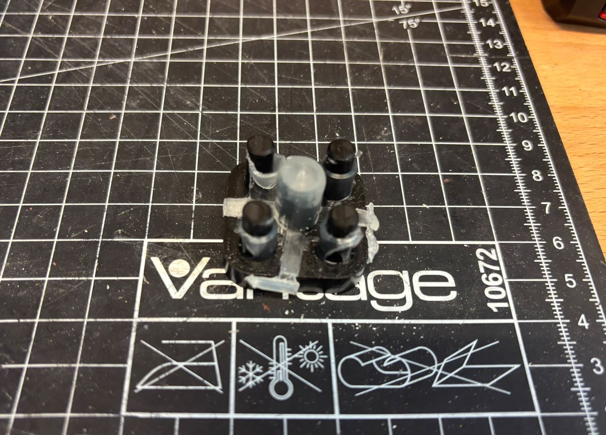
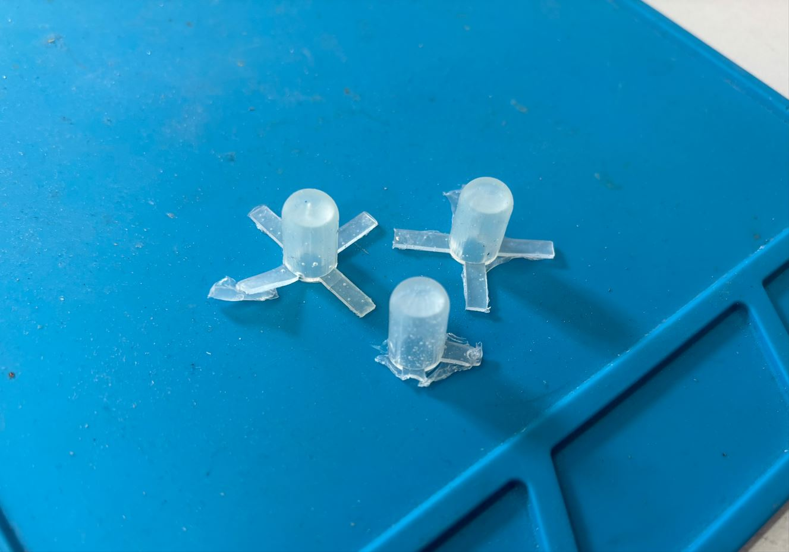
Po úspěšném vyjmutí z formy jsem kancelářskými nůžkami zastřihnul okraje a odstranil zbytky silikonu z odtokových kanálků.
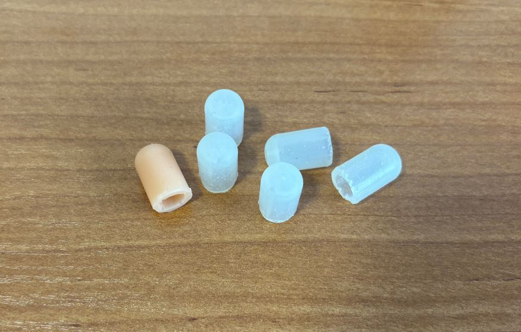
Průměr části nohy hexapoda, na kterou se návlek navléká, jsem záměrně navrhl o milimetr větší, než je vnitřní průměr botičky. Díky tomuto přesahu a tření návleky na nohách robota drží i bez použití lepidla.
Bohužel se ukázalo, že jsou botičky příliš měkké a velmi snadno se deformují. Noha se tak po došlápnutí může v bodě kontaktu s podložkou mírně vychylovat, což by vnášelo nepřesnosti do výpočtů inverzní kinematiky. Zároveň se na nich již po krátkém testování chůze objevily známky opotřebení. Dočasně proto využiji návleky pořízené na AliExpressu a v budoucnu si pravděpodobně odliji nové z tvrdšího silikonu.
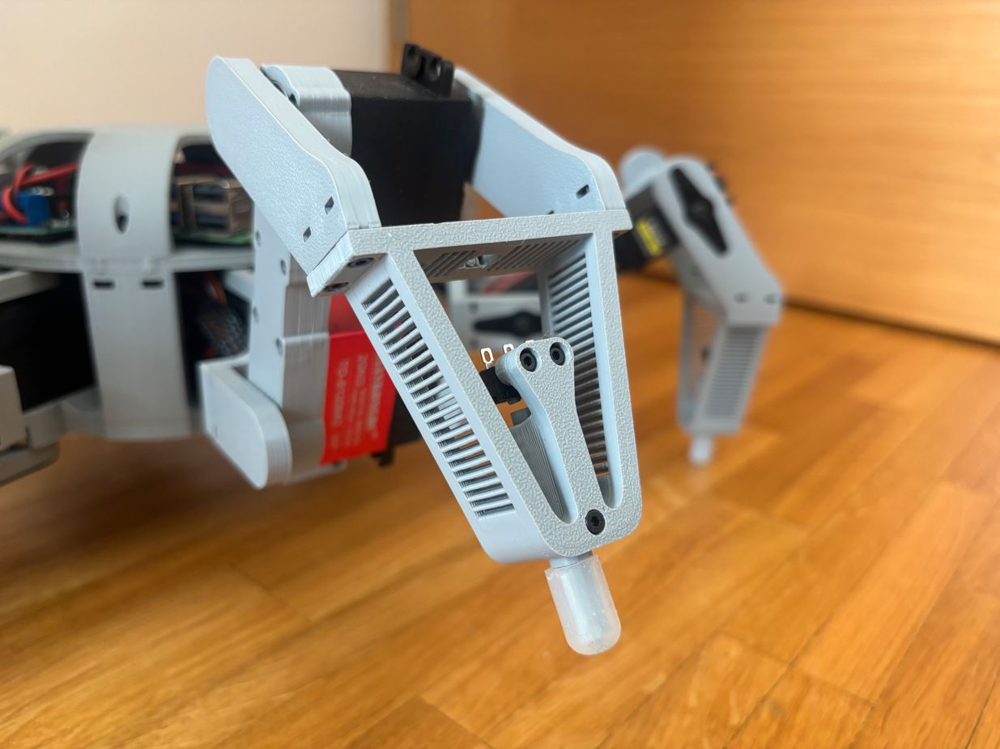